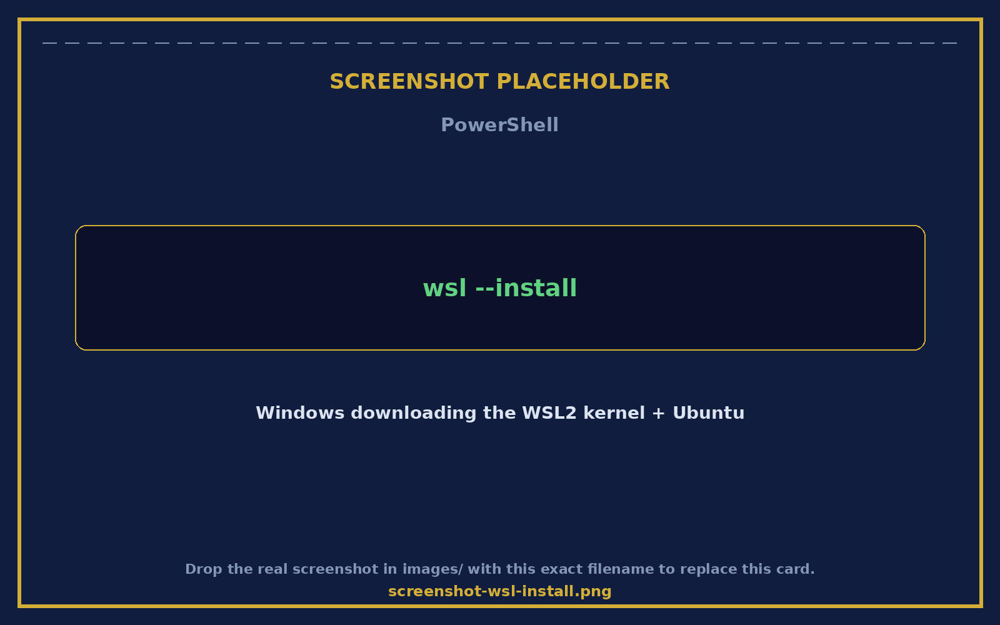
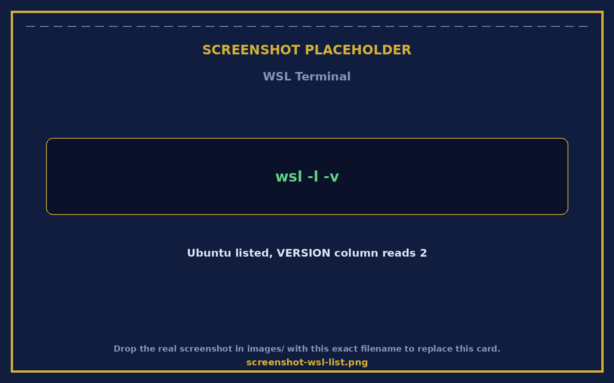
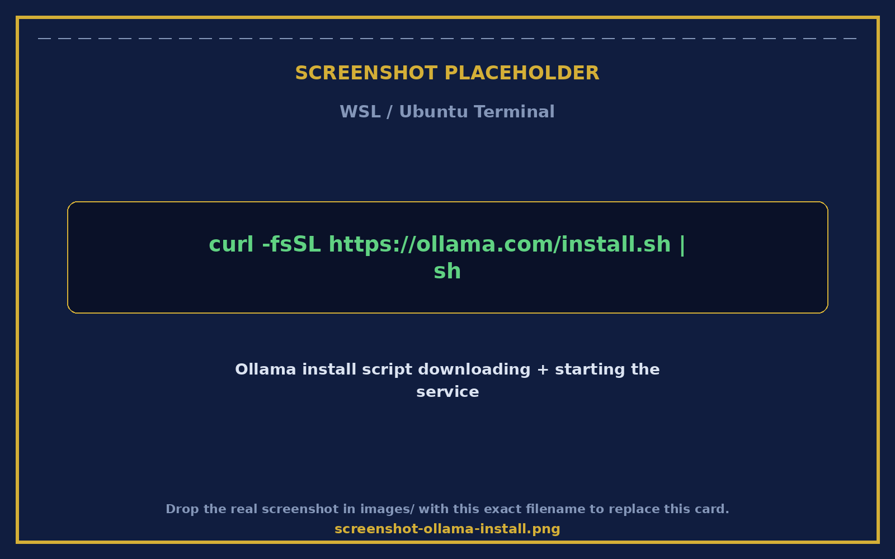
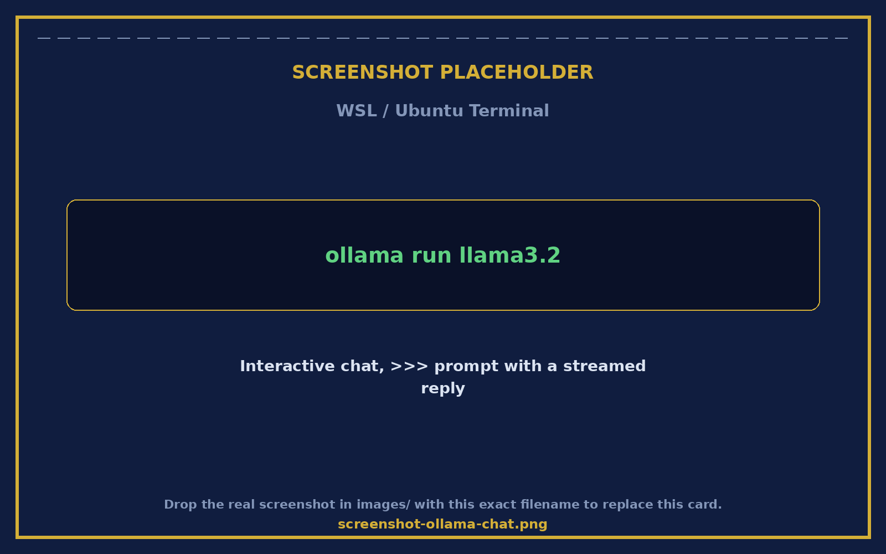
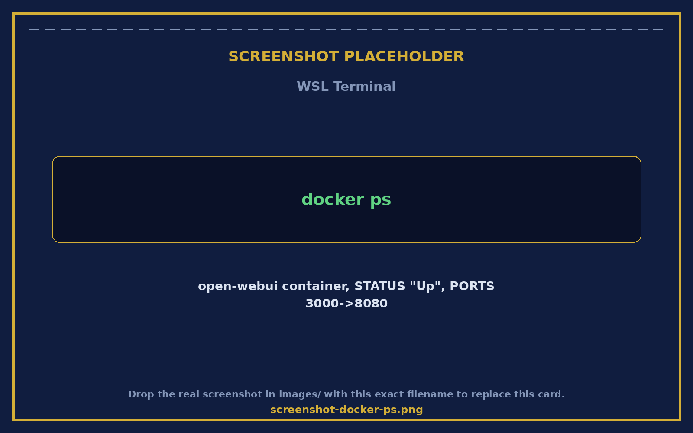
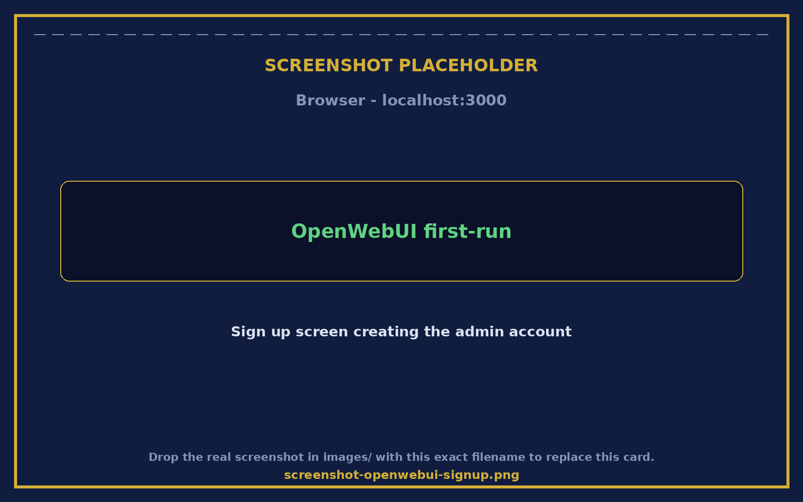
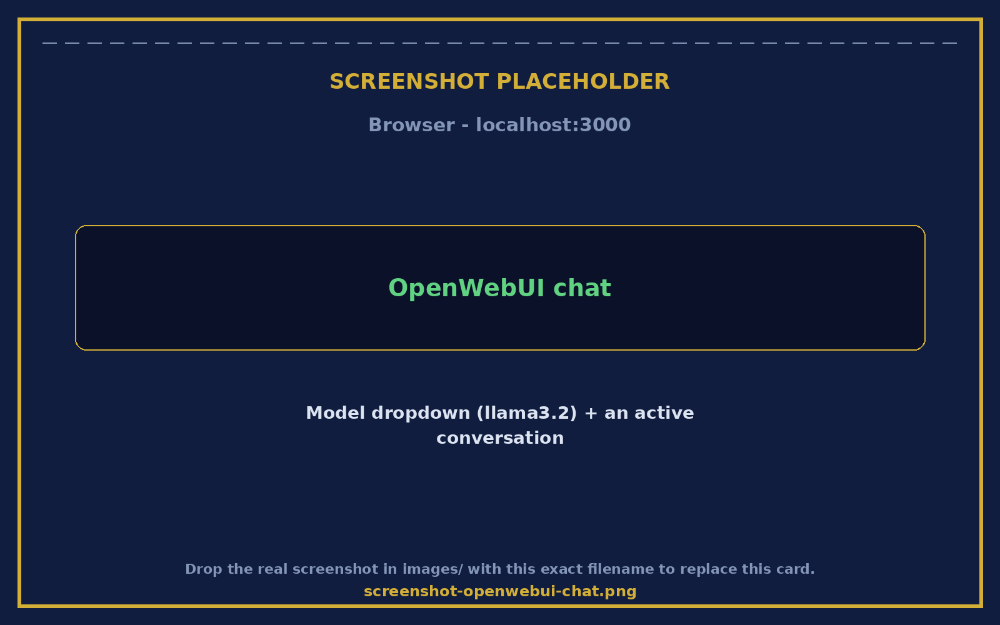
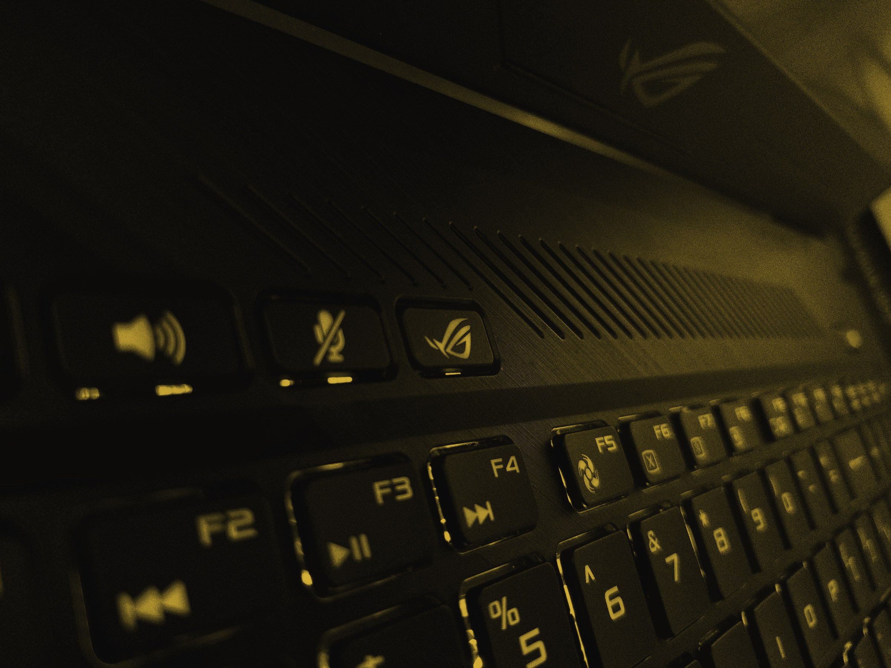

Use the arrow buttons in the lower-right, the arrow keys, Page Up/Down, or the space bar to move through the slides. Click anywhere on a slide to advance.
Local AI with WSL, Ollama & OpenWebUI
Run a private AI chatbot entirely on your own PC
No cloud account, no subscription, no monthly bill. A beginner's walkthrough of Windows Subsystem for Linux, Ollama, and OpenWebUI — one command at a time.
Windows 10 (build 19041+) or Windows 11, 64-bit, with virtualization enabled in BIOS/UEFI
8 GB RAM
minimum — 16 GB+ recommended for bigger models
20 GB free
disk space for WSL plus your first model
64-bit CPU
any Intel or AMD chip from the last ~8 years
First, Some Vocabulary
WSL
Windows Subsystem for Linux — a real Linux environment that runs directly inside Windows. No virtual machine to set up, no dual-boot, no separate computer.
Files and networking are shared between Windows and Linux
This is where Ollama actually lives and runs
Install WSL
Five minutes, one restart
1
Open PowerShell as Administrator
Right-click the Start button → Terminal (Admin), or search “PowerShell” and Run as administrator
2
Run the install command
wsl --install
3
Restart your computer
Windows will prompt you — save your work first
4
Let Ubuntu finish setting up
It opens automatically on first boot after restart
5
Create a Linux username and password
This account is separate from your Windows login
6
You're in
You now have a real Linux terminal inside Windows
What You'll See
PowerShell running the install command
wsl --install
Downloads the WSL2 kernel and Ubuntu
Takes a few minutes on first run
First boot
Ubuntu opens in its own window
Prompts for a new Linux username + password

Everyday WSL Commands
Run these from PowerShell or Windows Terminal
wsl -l -v — List installed distros and which WSL version each uses
wsl — Jump straight into your default Linux distro
wsl --shutdown — Fully stop all running WSL instances
wsl --update — Update the WSL engine itself
wsl --version — Check your installed WSL and kernel version
Checking Your Setup
wsl -l -v in action
NAME column
Ubuntu should be listed here
VERSION column
Should read 2, not 1 — that's WSL2

Next Term
Ollama
A free tool that downloads, runs, and manages AI language models on your own computer — no cloud account, no subscription, no API key.
Everything runs locally — your prompts never leave your machine
One command downloads a model, one command starts chatting
Install Ollama Inside WSL
One command
1
Open your WSL Ubuntu terminal
Type wsl from PowerShell, or open “Ubuntu” from the Start menu
2
Run the install script
curl -fsSL https://ollama.com/install.sh | sh
3
Wait for it to finish
It downloads Ollama and sets it up as a background service
4
Confirm it installed
ollama --version
The Install Script
curl ... | sh, running inside WSL
Downloads the binary
Installs to /usr/local/bin/ollama
Starts the service
Ollama listens on localhost:11434

Ollama Command Cheat Sheet
Everything starts with ollama
bash
ollama serve # start the server (usually already running)
ollama pull llama3.2 # download a model without running it
ollama run llama3.2 # download (if needed) and start chatting
ollama list # show every model you've downloaded
ollama ps # show models currently loaded in memory
ollama show llama3.2 # see details about one model
ollama rm llama3.2 # delete a model you no longer need
ollama stop llama3.2 # unload a model from memory
pull downloads only; run downloads AND starts chatting
list shows what's on disk; ps shows what's loaded right now
rm deletes the model; stop just frees up memory
Which Model Should You Pick?
Match the model size to your hardware
Small & Fast — llama3.2:3b
~2 GB download
Runs fine on 8 GB RAM
Great for quick tasks & testing
Less nuanced on hard questions
Balanced — mistral:7b or llama3.1:8b
~4–5 GB download
Wants 16 GB RAM for comfort
Good everyday quality/speed mix
The sensible default choice
Best Quality — llama3.1:70b
40+ GB download
Wants 64 GB+ RAM or a GPU
Slow on an ordinary laptop CPU
Save for powerful hardware
Download & Run Your First Model
Using llama3.2 as the example
1
Download it
ollama pull llama3.2
2
Wait for the download
Progress bars show layer-by-layer download status
3
Start chatting
ollama run llama3.2
4
Type a question
Press Enter and the model replies right in the terminal
5
Exit when you're done
Type /bye
Your First Conversation
ollama run llama3.2, live
The prompt
A >>> arrow waits for your question
The reply
Streams back token by token, like typing

Last Term
OpenWebUI
A private, browser-based chat interface for the models Ollama is running — looks and feels like ChatGPT, but it's entirely yours.
Talk to any Ollama model through a clean chat window
Runs in Docker, entirely on your own machine
Install Docker Desktop First
OpenWebUI runs inside a Docker container
1
Download Docker Desktop
From docker.com, the Windows installer
2
Run the installer
Keep “Use WSL 2 instead of Hyper-V” checked
3
Restart Windows
When the installer prompts you
4
Open Docker Desktop
Wait until it shows “Running” in the bottom-left
5
Enable WSL integration
Settings → Resources → WSL Integration → toggle on Ubuntu
-v open-webui:... saves your chats between restarts
--restart always brings it back after a reboot
Confirming It's Running
docker ps, right after launch
STATUS column
Should read “Up” within a few seconds
PORTS column
Should show 0.0.0.0:3000->8080/tcp

First Login to OpenWebUI
http://localhost:3000
1
Open a browser
Go to http://localhost:3000
2
Click “Sign up”
The very first account you create becomes the admin
3
Fill in name, email, password
This is a local account — nothing is sent anywhere
4
Create Account
You land straight in the chat interface
The Sign-Up Screen
First run of OpenWebUI
First account = admin
No separate admin setup needed
All local
Stored in the open-webui Docker volume

Chatting Through OpenWebUI
Pick a model from the dropdown, then chat
Model dropdown
Lists every model ollama list shows
Switch models mid-conversation
Chat window
Same model, friendlier interface

Quick Troubleshooting
The five snags almost everyone hits
“ollama: command not found” — Close and reopen your WSL terminal so the install takes effect
OpenWebUI shows no models — Run ollama list inside WSL to confirm a model is downloaded
Page won't load at localhost:3000 — Check Docker Desktop shows the container as “Running”
Everything feels slow — Run wsl --shutdown, then reopen WSL for a clean restart
Model won't load / crashes — It may be too large for your RAM — try a smaller model

Local AI with WSL, Ollama & OpenWebUI
You're running a private AI, entirely on your own machine.
WSL gave you the Linux environment. Ollama gave you the models. OpenWebUI gave you the chat window. Revisit any command on this deck any time — nothing here ever needs the cloud.